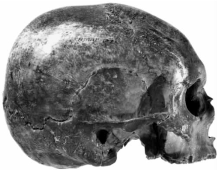

1663年，罗马天主教把笛卡尔的著作列入了官方的禁书录。他死后，越来越多的人抱怨，他让上帝失去了在自然科学研究中的位置。他生前竭力安抚的耶稣会士此时成了禁止他著作的急先锋。1663年对他的谴责仅仅是开始，此后当局又颁布了一系列禁令，1691年，法国王室更是下令禁止法国所有学校讲授笛卡尔哲学的任何观点。数十年后，牛顿的物理学取代了笛卡尔的物理学，在法国和其他地方，人们开始对他的形而上学提出修正性的解释，也开始详细讨论他的逻辑学和伦理学。
笛卡尔死后的约二十年间，任何人如果认同他在法文版《哲学原理》序言中勾勒的“完整哲学”设想，都会被贴上“笛卡尔分子”的标签。笛卡尔曾在序言中说，《哲学原理》的第二、三、四部分覆盖了物理学所有最一般的知识（9B.16），但要表述一套关于物质实体的完整科学，还有更多的工作要做。《哲学原理》表述了自然定律，提出了宇宙理论（描述物理宇宙如何构成、如何产生），也解释了地球上最常见的“构件”（elements [92] ）或者说“体”以及它们的性质。但对于“个别的体”，也就是各种具体的矿物、植物、动物以及尤其重要的人类，他只是刚刚开始论及。
笛卡尔说，补齐这方面的材料需要大量的观察和实验，单个人的精力和财力是无法承担的（9B.17）。最早的一批“笛卡尔分子”着手做的正是这样的观察和实验。根据《哲学原理》第二部分的运动定律、第三部分的物质旋涡理论、第三和第四部分的精微物质假设，雅克·罗奥 [93] 和皮埃尔·西尔万·勒鲁瓦 [94] 在法国，约翰内斯·克劳贝格 [95] 在荷兰和德国所作的尝试实质上都是在补充笛卡尔的物理学。但当牛顿指出并纠正了笛卡尔的重力和行星运动理论中的严重偏差时，这些科学家的研究计划便逐渐失去了动力。牛顿的体系与笛卡尔截然不同，它引入了一种不可消解的力（万有引力），而这是笛卡尔的理论无法包容的。
在法文版《哲学原理》序言中，笛卡尔说，在对自己进行哲学训练的过程中，应该先攻逻辑学，再攻形而上学，然后再攻物理学：
（9B.13——14）
我们在评论《法则》和《方法谈》第二部分的四条箴规时，已经对这种逻辑有所了解。笛卡尔去世后，安托万·阿尔诺和皮埃尔·尼科勒 [96] 于1664年发表了《逻辑学，或思维艺术》，书中采用了取自《法则》的观点并作了细致阐发。《法则》在笛卡尔生前没有出版，是在他遗留的手稿中发现的。在笛卡尔的追随者中，并非只有阿尔诺和尼科勒试图把这种“新”逻辑学清楚地表述出来，他们甚至都算不上最早如此做的。我们在谈论物理学中的笛卡尔流派时提到的约翰内斯·克劳贝格也在进行同样的努力。
这一时期其他哲学家、科学家和神学家的著作也可视为对笛卡尔未竟事业的贡献。佛兰德 [97] 哲学家阿诺德·赫林克斯 [98] 在1655年沿着笛卡尔的路线写了一部伦理学著作。包括他在内的许多哲学家都试图解决笛卡尔形而上学中的诸多困难。早期的评注者主要关注的问题包括笛卡尔的概念说、心与体的关系、因果论以及阐释实体与性质关系的形而上学理论。笛卡尔死后不久爆发的形而上学论战中，代表人物是阿尔诺、尼古拉斯·马勒伯朗士 [99] 和西蒙·富歇 [100] 。莱布尼茨 [101] 和斯宾诺莎 [102] 提出了各自的复杂体系，它们试图在某些方面做得比笛卡尔还笛卡尔——更严格地遵循笛卡尔式演绎法。在英国，约翰·洛克 [103] 不同意笛卡尔认识论中的天赋论，但保留了一套概念理论。乔治·贝克莱 [104] 和大卫·休谟 [105] 在马勒伯朗士的影响下，也对笛卡尔的双实体论和物质实体具备因果效力的说法提出了批评和修正。与笛卡尔派物理学家和道德学家相比，上述哲学家的工作远为接近当今的笛卡尔研究，因为今天仍然出没在人们周围的笛卡尔是一个哲学家——而不是物理学家、医生或道德导师——的幽灵。

图8 笛卡尔头骨，保存于巴黎人类博物馆
除了语言学界赞许笛卡尔天赋论倾向的学者外，英语学术界的多数哲学研究者现在都认为，让笛卡尔的幽灵安息的时候到了。人们至今仍在努力埋葬笛卡尔，这恰好反证了其哲学的力量。哲学家们继续写着长篇大论，质疑笛卡尔的概念论和二元论，质疑他科学必须从不证自明的原则出发的观点，质疑他哲学的中心问题是知识问题的说法。这些说法构成了一个体系，所以才会持续发挥影响。它们都是在履行同一项任务的过程中得出的结论，这项任务就是证明物理世界的数学式理解比基于感官经验的理解更客观，并且人类理性具备形成这种更客观理解的能力。笛卡尔论证这些观点的过程无疑充满了错误的想法，数百年来的批评者已经揭示了这一点。但如果哲学研究者们不是痴迷于笛卡尔的这项任务，这些批评本身也不可能延续下来。今日他们的兴趣依然不减。他们仍会争辩，究竟哪些类型的主题可以让人类获得日益客观的理解。这些争论之所以还有意义，是因为我们的脑海里已经有一幅清晰的图景，知道怎样才算对物质 世界理解越来越深，而很早就勾画出类似图景的正是笛卡尔。由于这个缘故，让笛卡尔的幽灵安息注定不容易。